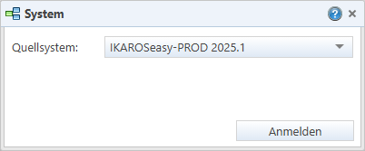

Listenfeld „Zielsysteme“: Erlaubt
die Auswahl eines oder mehrerer Systeme, in denen ein Paket, Change oder Change
Set installiert werden soll. Das Feld wird nur im Zusammenhang mit
Transportaktionen angezeigt.
Listenfeld „Zielsysteme“: Erlaubt
die Auswahl eines oder mehrerer Systeme, in denen ein Paket, Change oder Change
Set installiert werden soll. Das Feld wird nur im Zusammenhang mit
Transportaktionen angezeigt.Elemente des Anmeldungsdialogs
Listenfeld „Zielsysteme“: Erlaubt
die Auswahl eines oder mehrerer Systeme, in denen ein Paket, Change oder Change
Set installiert werden soll. Das Feld wird nur im Zusammenhang mit
Transportaktionen angezeigt.
Listenfeld „Quellsystem“: Erlaubt
die Auswahl desjenigen Systems, aus dem die Artefakte zur Auswahl angeboten
werden sollen. Das Feld wird bei Aufruf des Artefaktpaket-Assistenten bzw. vor
der Auswahl eines Quellsystems angezeigt.
Varianten des Anmeldedialogs
Anmeldung an ein Quellsystem
Dialog zur Anmeldung an ein Quellsystem (z. B. beim Aufrufen des Artefaktpaket-Assistenten). Das Feld „Quellsystem“ ist deaktiviert, wenn der Change oder das Change Set bereits gespeichert sind.

Abb. 22: Dialog für Anmeldung an ein Quellsystem
Systemwahl bei Transport in Zielsystem
Dialog zur Anmeldung an einem oder mehreren Zielsystemen (z. B. beim Transport von Paketdateien, Changes oder Change Sets):

Abb. 23: Dialog für die Anmeldung an Zielsysteme
Beim Transport von Transportaufträgen (Menüpunkt „Transportplanung“ [Link]) wird das Zielsystem aus dem Transportauftrag übernommen und kann nicht geändert werden.

Abb. 24: Dialog für die Anmeldung bei Transport eines Transportauftrags